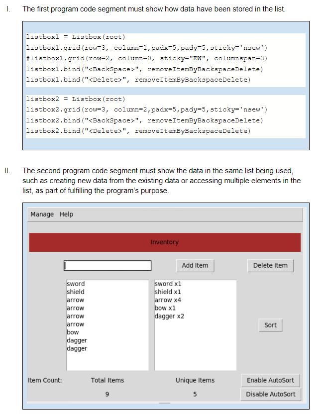

This program is used to assist in managing an inventory by providing a total count of items as well as an amount of each different type of item. The program includes instructions on use, as well as the ability to add, remove, save, load, and alphabetically sort an inventory. The input is your raw list of items, the outputs are a unique item list which is more organized as it only displays each unique item as well as the number of each unique item. An output also occurs when you hit the sort button which then reorders your list of items alphabetically. The names of the lists being used in this program are “listbox1” and “listbox2.” The items stored in your inventory is the data being stored in listbox1 and 2. My program manages complexity because I could’ve written it without the second listbox that counts items but only shows separate listings for unique items, however that would've made my list way less practical.
